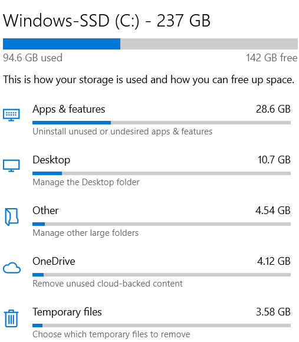

Storage
Storage sense can automatically free up space by gettiing rid of files you don't need,like temporary files and content in your recycle bin.
Configure Storage Sense or run it now

Show more categories
More Storage settings
View storage usage on other drives
Change where new content is saved
Manage Storage Spaces
Optimize Drives
View backup options
Keep clutter off your PC
When Storage sense is turned on,it'll free up space only when your pc is low on space.To clean up unused files now,select Configure Storage Sense or run it now >Clean now.
Help from the web
Removing previous versions of Windows
Clearing Delivery Optimization cache
Showing/hiding the Recycle Bin
Deleting Recycle Bin files
get help
give feedback